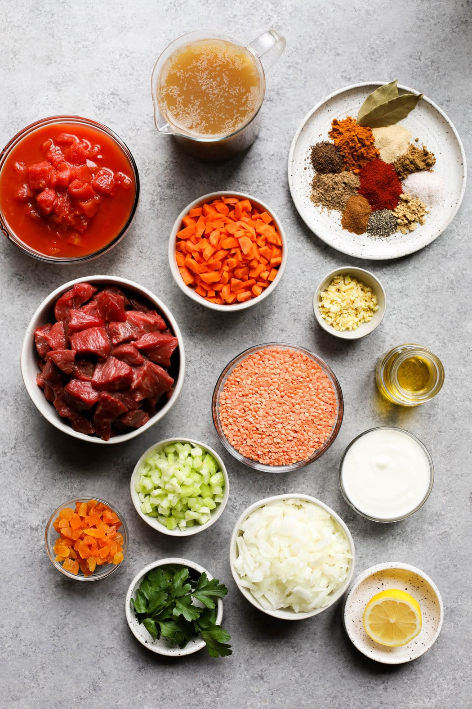
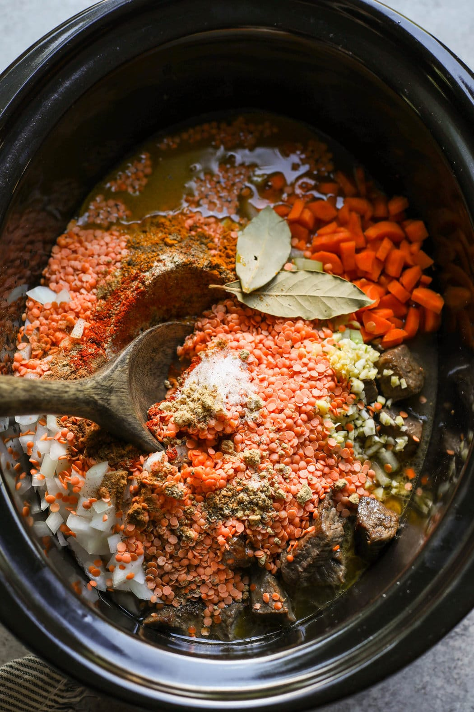
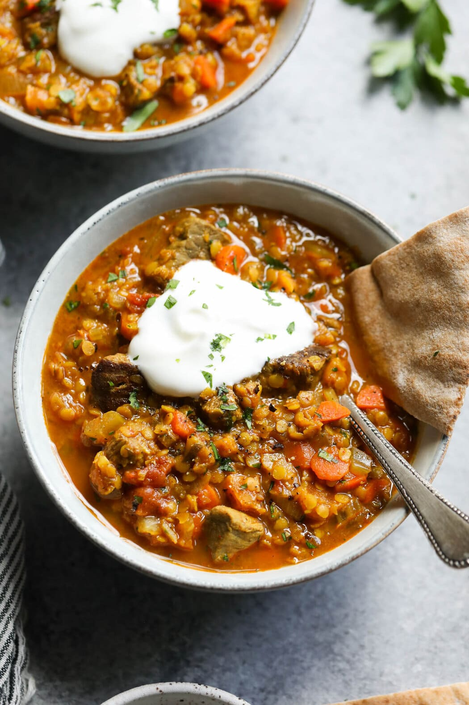

Ingredients
Directions
- Place a large skillet over medium-high heat. When the skillet is hot, add the oil and swirl to coat. Add the beef and cook until browned, about 2-3 minutes. Flip and cook for another 2 minutes. Transfer the browned meat and pan juices to the slow cooker.
- To the slow cooker, add the diced onion, carrots, celery, garlic, diced tomatoes, broth, dry lentils, turmeric, paprika, cumin, coriander, garlic powder, cinnamon, ginger, salt, allspice, and black pepper. Stir to combine all of the ingredients.
- Add bay leaves and gently stir again.
- Place the lid on the slow cooker and cook on the low setting for 7-9 hours** or until the lentils are tender.
- Stir in the dried apricots, lemon juice, and parsley.
- Ladle the stew into bowls. If desired, top servings with yogurt or sour cream, sprinkle with fresh parsley and cracked black pepper, and serve with pita bread or naan.